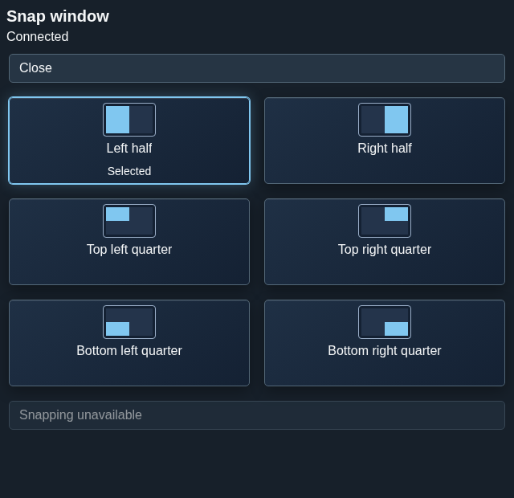

Snap layouts
Snap layouts offer six placements for an eligible window.
Overview
Snap layouts offer six placements for an eligible window.
Anatomy
The chooser contains left and right halves and the top-left, top-right, bottom-left and bottom-right quarters, followed by Apply.
Six named region controls select a left or right half, or one of four quarters. Apply is a separate control after the choices; Close leaves the chooser.
States
Selection previews a proposed region. An unavailable geometry capability prevents applying a placement.
- Unselected: no proposed region is chosen.
- Selected: a region is proposed, but the window has not moved.
- Unavailable: current geometry or capability does not admit Apply.
- Applied: a fresh window observation confirms placement.
Specimen
Real Elm interface. Simulated desktop. Client window interiors are fixtures. Load the desktop only when you want to explore this component.
Behavior
Select a region, then choose Apply. Placement depends on current window eligibility, work area and generation-bound geometry; selecting alone does not move the window.
Choose one of the six named regions and then activate Apply. The proposal binds the current monitor, work area and workspace generation; changed facts require a fresh valid proposal.
Accessibility
Each choice has a text name and keyboard access; selected state is distinct from focus and from an applied placement.
Content
Name the half or quarter explicitly and communicate unavailable geometry without suggesting it was applied.
Use “top-left quarter” or another explicit region name. Describe unavailable geometry as unavailable, not as a selected or completed snap.
Evidence
Unmodified captures of the running interface record the states below.

Try it
Explore snap layouts in context on the simulated desktop.